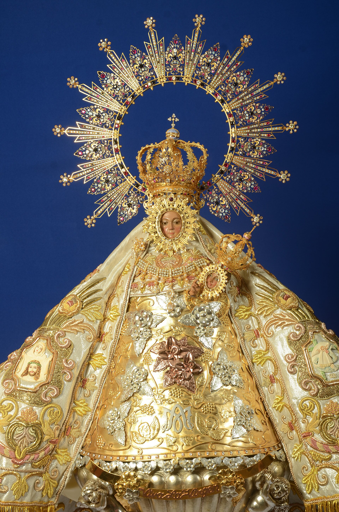
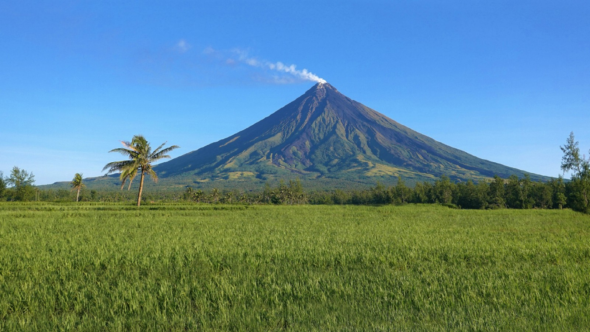
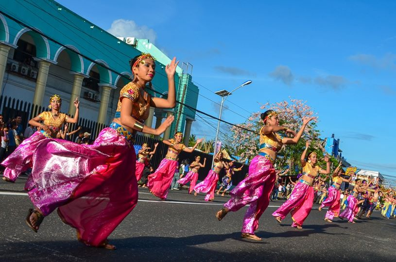
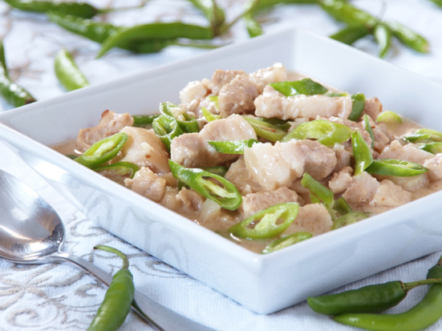
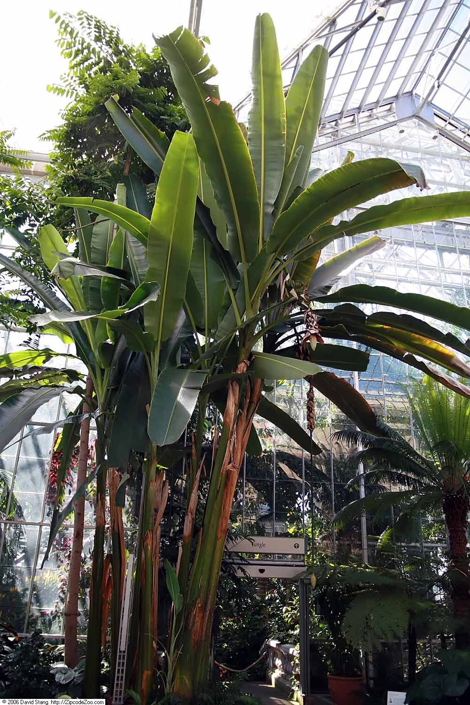

Festival · September
Peñafrancia
The largest Marian devotion in the Philippines — over a million pilgrims walk with the image of Ina down the Bicol River on a flotilla of bancas each September.

Pre-Hispanic · Spanish · Republic
Five centuries of chiefs, friars, revolutions, and devotion — shaped by a single volcano, a river, and the spiciest kitchen in the country.
01 — A brief history
From chiefdoms to province
Long before Spanish galleons reached the Pacific, the Bicol Peninsula was organised into a network of independent chiefdoms called banwa — each ruled by a datu and bound together by trade in gold, beeswax, and abaca fibre. Early Bikol speakers had their own syllabary, practised wet-rice agriculture, and mined iron that was forged into blades and traded as far as China. Spanish chroniclers arriving in the 1560s described a population "well-ordered, industrious, and unusually fond of bathing."
The Spanish arrived in 1569 under Captain Luis Enriquez de Guzman, and the Franciscan friars who followed built stone churches across the region through the 17th and 18th centuries — including the Cagsawa church, which Mayon buried in lava during the catastrophic 1814 eruption. The Bicol Region became a strategic link in the Manila–Acapulco galleon trade: abaca, pili, and copra were loaded at the ports of Sorsogon and Albay for the long crossing to Mexico. Resistance was constant — the Bicolano revolts of 1665, 1762, and 1898 each drew thousands of armed men against colonial rule.
During the Philippine Revolution of 1898, Bicolano generals — Simeón Ola of Albay, Ludovico Arejola of Camarines Sur — held out longer than almost any other provincial command, and the American occupation that followed brought public schools, the abaca boom of the 1920s, and the railway that connected Legazpi to Manila. World War II saw heavy fighting across the peninsula; the Leyte landings of 1944 were supplied through Bicol's ports. Today, the region is the country's largest producer of abaca and pili, a major source of geothermal energy, and home to more than six million Bicolanos — many of whom still speak Bikol as their first language.
Captain Luis Enriquez de Guzman lands on the Bicol coast; first Christian settlements established within the year.
Franciscan friars begin building baroque stone churches across the region — many still stand, others were buried by Mayon.
Mayon's violent eruption buries the Cagsawa church — only the bell tower remains above the lava line.
The image of Our Lady of Peñafrancia is enthroned in Naga — beginning a Marian devotion that now draws over a million pilgrims each September.
Bicolano generals Simeón Ola and Ludovico Arejola lead the last provincial forces to surrender to American occupation.
Naga-born cook Cely Kalaw names the dish after the Manila–Bicol train — it becomes the region's most famous export.
02 — Cultural highlights
Festivals & craft
Three things carry Bicolano identity across generations: a 300-year-old Marian procession, a coconut-and-chili cuisine, and the world's strongest natural fibre — woven on the same looms for half a millennium.

Festival · September
The largest Marian devotion in the Philippines — over a million pilgrims walk with the image of Ina down the Bicol River on a flotilla of bancas each September.

Festival · May
Albay's month-long anniversary celebration — Mayon climbs, street food fairs, cooking contests, and the Mutya ng Magayon pageant.

Cuisine · Spicy
Pork belly in coconut milk, shrimp paste, and finger-length chilies — the region's most famous dish, named after a train.

Craft · Heritage
The world's strongest natural fibre, grown almost entirely in Bicol — woven into rope, textile, and intricate placemats on backstrap looms unchanged for centuries.
Ready when you are
Skip ahead to the travel guide — a day-by-day itinerary, packing checklist, and contact form for any questions we haven't answered.